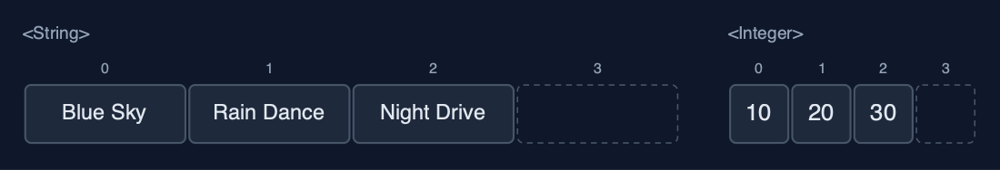
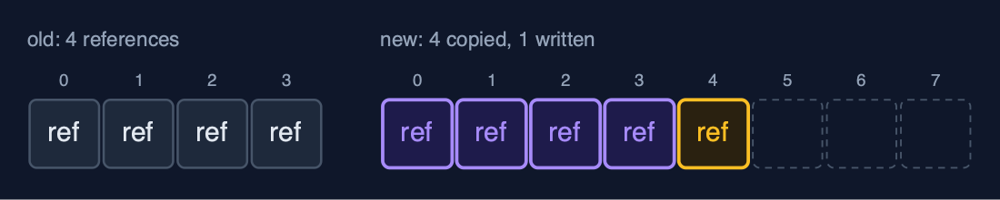
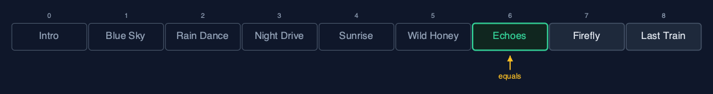
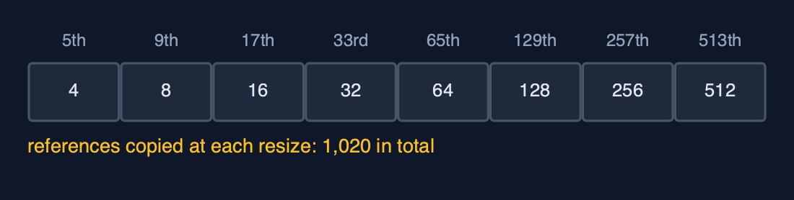

Dynamic Array (Generic), Explained
In one sentence
A generic dynamic array stores references to any type T on an Object[] cast to T[], doubles when full, halves when a quarter full, and finds elements with equals: Java's ArrayList, built by hand.
The picture

GenericDynamicArray<Song>: size 5, capacity 8; each place holds a reference to a Song
The everyday idea
Picture moving house again, but instead of carrying the furniture, you carry a list of where each piece is stored in a warehouse. When the list runs out of lines, you copy it onto a sheet twice as long, one address at a time. The furniture never moves: only the addresses are copied. And the list does not care whether the addresses point at chairs, books or bicycles.
The 5 acts
Act 1: One class, any element type
Three playlists use one class. GenericDynamicArray<String> holds titles, GenericDynamicArray<Integer> holds play counts, and GenericDynamicArray<Song> holds records of our own, each a title and a length. Inside each is an array created as (T[]) new Object[4], because Java cannot create new T[4]: T is erased when the program runs. Capacity 4, size 3 in each.

Three arrays from one class: Strings, Integers and Songs Here are two of them. Titles and play counts. The same class, the same code, four places each, three in use.
What the demo printed:
GenericDynamicArray<String>: [Blue Sky, Rain Dance, Night Drive]
GenericDynamicArray<Integer>: [10, 20, 30]
GenericDynamicArray<Song>: [Blue Sky (3:34), Rain Dance (3:07), Night Drive (4:03)]
inside each: (T[]) new Object[4], capacity 4, size 3Act 2: Full? Double it, copying references
After the fourth song the array is full, so appending "Paper Moon" allocates an array of 8 places and copies the 4 references across, then stores the new one. The songs themselves never move: after the resize, index 0 still holds the very same Song object. Four more songs follow; the ninth doubles the capacity again to 16. Nine appends, two resizes, twelve references copied: the same counts as the String-only dynamic array.

The resize copies references: the Song objects stay where they are Here is the resize. The old array of four, and the new array of eight. Each place holds an arrow to a song. The arrows are copied, and the songs stay put.
What the demo printed:
append(Paper Moon (2:56)): full, new array of 8 places, 4 references copied
index 0 still holds the very same Song object: true
9 songs appended, 2 resizes, capacity 16Act 3: The middle, and equals
Inserting an intro at the front shifts all 9 song references one place right; deleting index 5, "Paper Moon", shifts the 4 after it left. Then a new Song("Echoes", 201) is made and searched for. Linear search compares with equals, and a record's equals compares its fields, title and length, so the search finds it at index 6 after 7 comparisons. It is not the same object as the one stored: == would have missed it.

linearSearch with equals: indexes 0 to 5 do not match, index 6 does Here is the search. Six songs compared, and not equal. The seventh, Echoes, is equal: same title, same length. Seven comparisons.
What the demo printed:
insertAt(0, Intro (0:42)): 9 songs shifted right
deleteAt(5) removed Paper Moon (2:56): 4 songs shifted left
linearSearch(new Song("Echoes", 201)) = index 6 after 7 comparisons: a record's equals compares title and length
but it is a different object: holdsSameObject = falseAct 4: Deleting clears references
Spare places hold null: capacity 16, size 9, seven empty. deleteAtEnd removes "Last Train" and sets its place to null, so no reference to the song remains in the array and the garbage collector can free it. Forgetting that line is a classic memory leak in a hand-written list. shrinkToFit then resizes to exactly 8 places, copying 8 references.
After deleteAtEnd: the freed place holds null, not a leftover reference Here is the array after the deletion. Eight songs. The place that held Last Train is now null, like every spare place.
What the demo printed:
capacity 16, size 9: 7 places spare, all null
deleteAtEnd() removed Last Train (3:52); its place is set to null so the Song can be freed
shrinkToFit(): capacity 8, 8 references copiedAct 5: The bill
A thousand appends copy 4 + 8 + ... + 512 = 1,020 references in total, about one per append: O(1) amortised, exactly as in the String-only dynamic array. Deleting from the end down to 256, a quarter of 1,024, halves the capacity to 512. Generics change the element type, not the algorithm or its costs. Java's ArrayList<E> is this structure on an Object[], growing by half rather than doubling.

References copied at each resize: 4, 8, 16 ... 512, about one per append Here are the copies at each resize. Four, eight, sixteen, doubling each time, up to five hundred and twelve. One thousand and twenty in all, for a thousand appends.
What the demo printed:
1,000 appends: 1,020 references copied, about 1 per append
deleteAtEnd down to 256 of capacity 1024: capacity halves to 512
the same costs as the String-only dynamic array: generics change the type, not the algorithm
already in Java: java.util.ArrayList<E>, written exactly this way on an Object[]The operations in code
Creating a T[]
/** Java cannot create "new T[n]" (T is erased at run time), so an Object[] is cast to T[]. */
@SuppressWarnings("unchecked")
private static <T> T[] newArray(int capacity) {
return (T[]) new Object[capacity];
}new T[capacity] does not compile, because Java erases T when it compiles. An Object[] can hold a reference of any type, and the cast is safe because the class only ever stores T. ArrayList does the same: it keeps an Object[] elementData.
Resize: copying references
/** Allocates a new array of {@code newCapacity} places and copies the references across. O(n). */
private void resize(int newCapacity) {
T[] newArr = newArray(newCapacity);
for (int i = 0; i < size; i++) {
newArr[i] = arr[i];
steps.copy();
}
arr = newArr;
resizes++;
}The loop copies arr[i], a reference, into the new array. The objects stay where they are, so after a resize every element is still the very same object.
Deletion at a position
/**
* Deletion at {@code pos}: shift arr[pos+1..size-1] one place left. O(n - pos).
*
* @throws IllegalStateException "underflow" when the array is empty
*/
public T deleteAt(int pos) {
if (isEmpty()) {
throw new IllegalStateException("underflow: the array is empty");
}
checkIndex(pos);
T deleted = arr[pos];
for (int i = pos; i < size - 1; i++) {
arr[i] = arr[i + 1];
steps.shift();
}
arr[size - 1] = null;
size--;
shrinkIfQuarterFull();
return deleted;
}After the shift, the last place in use is set to null. With objects this matters: a leftover reference would keep the deleted song alive, and the garbage collector could never free it.
Linear search with equals
/** Linear search with {@code equals}: the first index holding an element equal to {@code key}, or -1. O(n). */
public int linearSearch(T key) {
for (int i = 0; i < size; i++) {
steps.compare();
if (arr[i].equals(key)) {
return i;
}
}
return -1;
}arr[i].equals(key) compares contents. A Song record's equals compares title and length, so a separately made song with the same fields is found.
The operations, and what they cost
| Operation | What it does | Time: best / average / worst | Extra space | Steps counted in the demo |
|---|---|---|---|---|
| Traverse | Visit arr[0] to arr[size-1] | O(n) / O(n) / O(n) | O(1) | one read per element |
Access get(i) / update(i, x) | Read or replace the reference in arr[i] | O(1) / O(1) / O(1) | O(1) | 1 step |
Insert at end append(x) | Store x at arr[size]; double first when full | O(1) / O(1) amortised / O(n) when it resizes | O(1) amortised; O(n) for the new array during a resize | 1,020 references copied over 1,000 appends |
| Resize (inside append) | A new T[] of twice the capacity, references copied | O(n) / O(n) / O(n), but rare | O(n) | 4 references at the 5th song, 8 at the 9th |
Insert insertAt(pos, x) | Shift arr[pos..size-1] right, store x | O(1) at the end / O(n) / O(n) at the front | O(1), plus a resize when full | 9 shifts at the front of 9 songs |
Delete at end deleteAtEnd() | Clear arr[size-1]; halve when a quarter full | O(1) / O(1) amortised / O(n) when it shrinks | O(1) amortised | 0 shifts |
Delete deleteAt(pos) | Shift arr[pos+1..size-1] left, clear the freed place | O(1) at the end / O(n) / O(n) at the front | O(1) | 4 shifts to delete index 5 of 10 |
| Linear search | arr[i].equals(key), for each i in turn | O(1) / O(n) / O(n) | O(1) | 7 comparisons to find Echoes |
| Shrink to fit | Resize to exactly size places | O(n) / O(n) / O(n) | O(n) | 8 references copied |
Compared with related structures
The generic dynamic array against its neighbours (n elements):
| Property | Generic dynamic array | Dynamic array of String | Generic static array |
|---|---|---|---|
| Element types | any T | String only | any Comparable T |
| Access element i | O(1) | O(1) | O(1) |
| Append | O(1) amortised | O(1) amortised | overflow when full |
| Insert or delete at the front | O(n) shifts | O(n) shifts | O(n) shifts |
| A resize copies | references | references to strings | not possible: fixed capacity |
| Finds elements with | equals | equals | equals, and compareTo for binary search |
| Java's own | ArrayList<E> | ArrayList<String> | T[] |
The verdict
This is the most used data structure in Java; in real code use ArrayList<E>, which is exactly this. Build it once by hand to understand what add, remove and get cost, and why a leftover reference is a memory leak.
How to recognise it in code you did not write
(T[]) new Object[capacity]in a generic class.if (size == arr.length) resize(arr.length * 2);before storing.arr[--size] = null;orarr[size - 1] = null;after a deletion.
Where you have already met this
java.util.ArrayList<E>,List<E>andVector<E>.StringBuilder, which grows its character array the same way.- C++'s
std::vector<T>and Python'slist.